Finding a job
Search by keyword and location, filter the results, and read the full listing before applying. Works just as well on a phone.

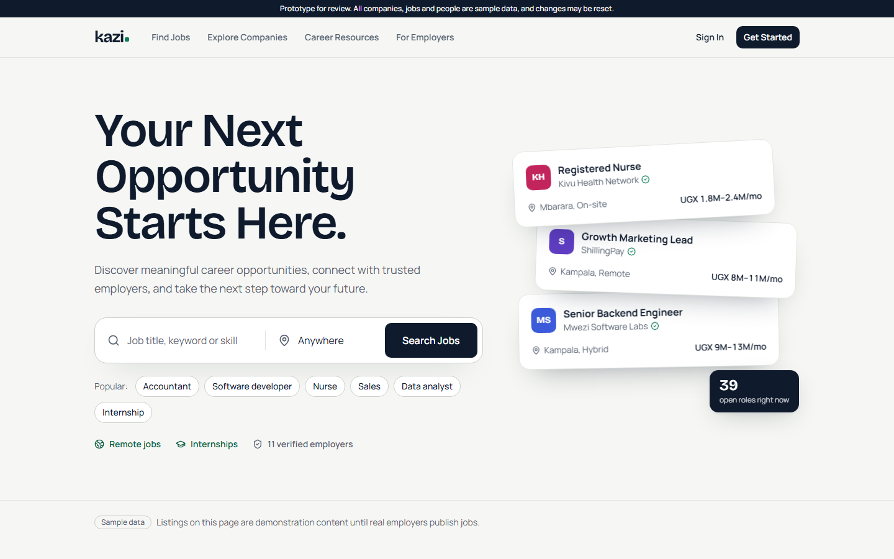

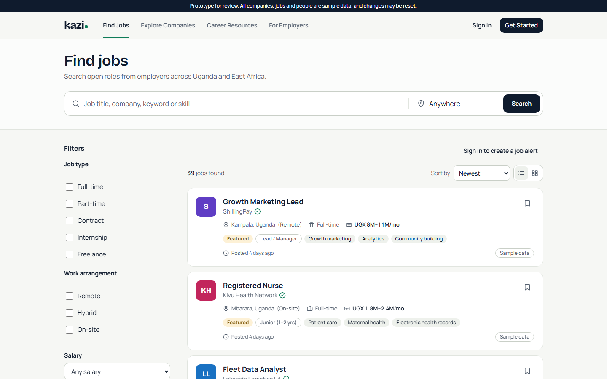

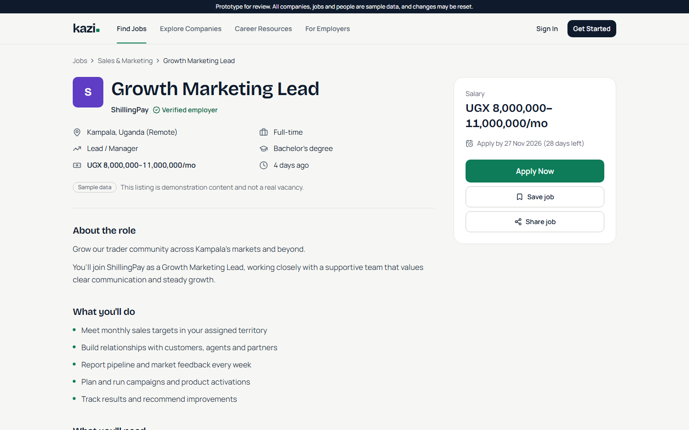

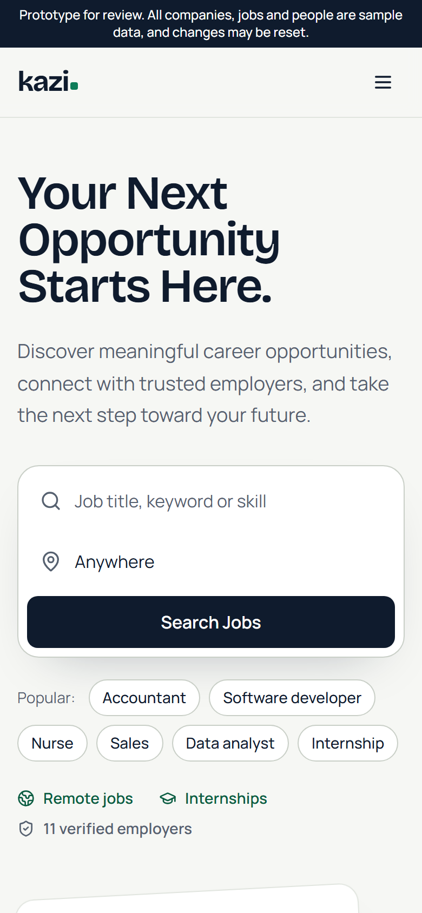

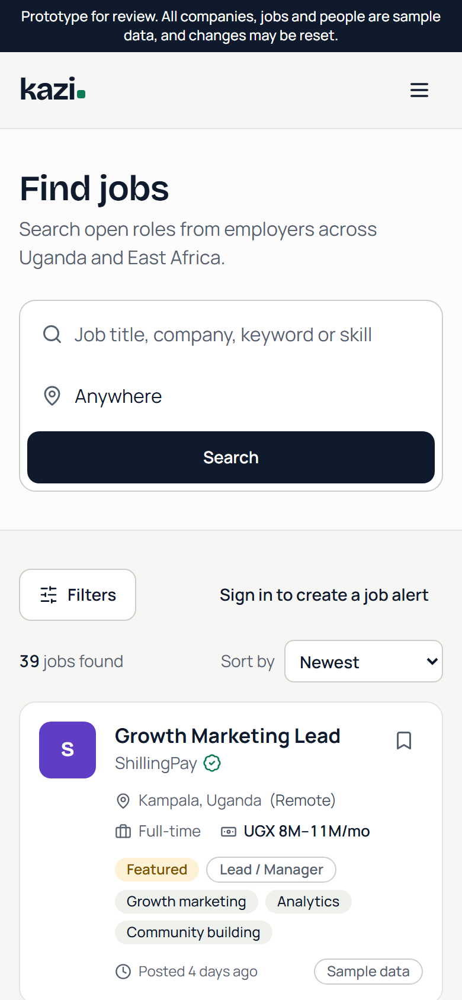
Companies
Every employer has a profile, and verified ones are marked.

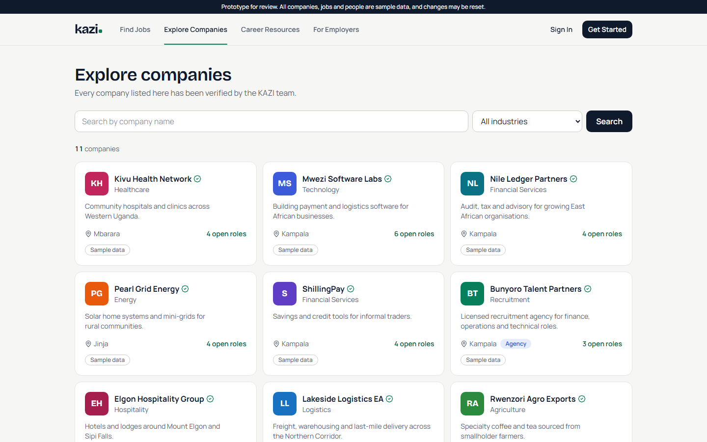
For job seekers
One place to see applications, interviews, saved jobs and alerts, with the status of every application.

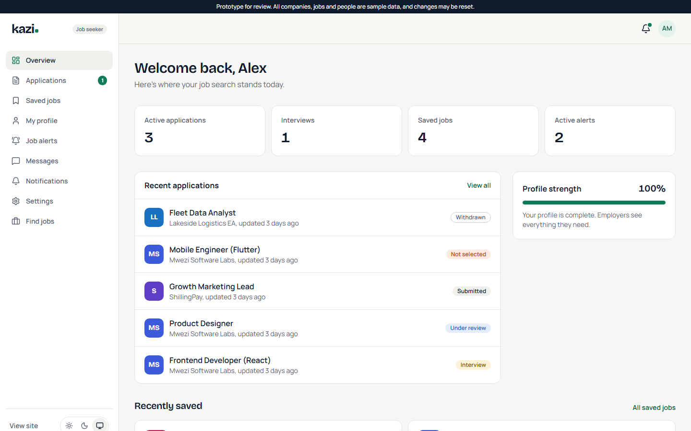

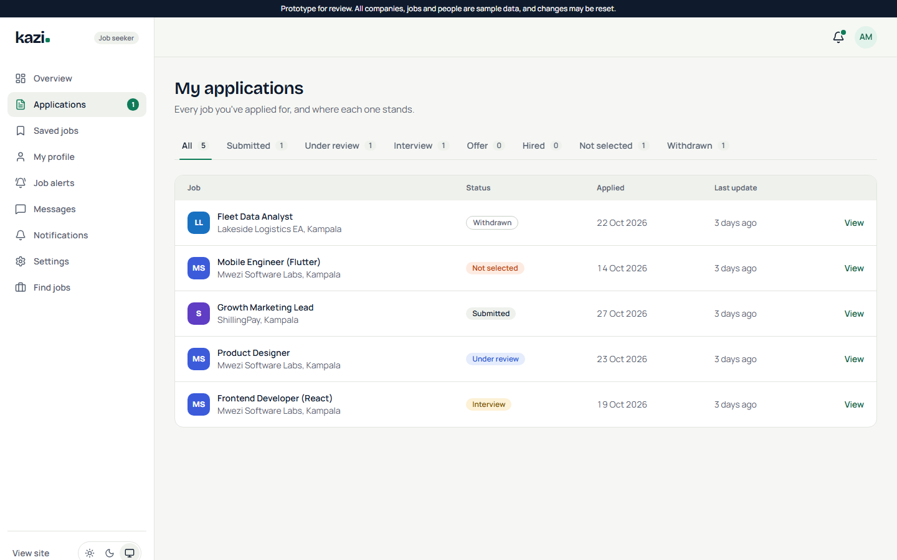
For employers
An overview of open roles and applicants, and a hiring pipeline where candidates move from stage to stage.

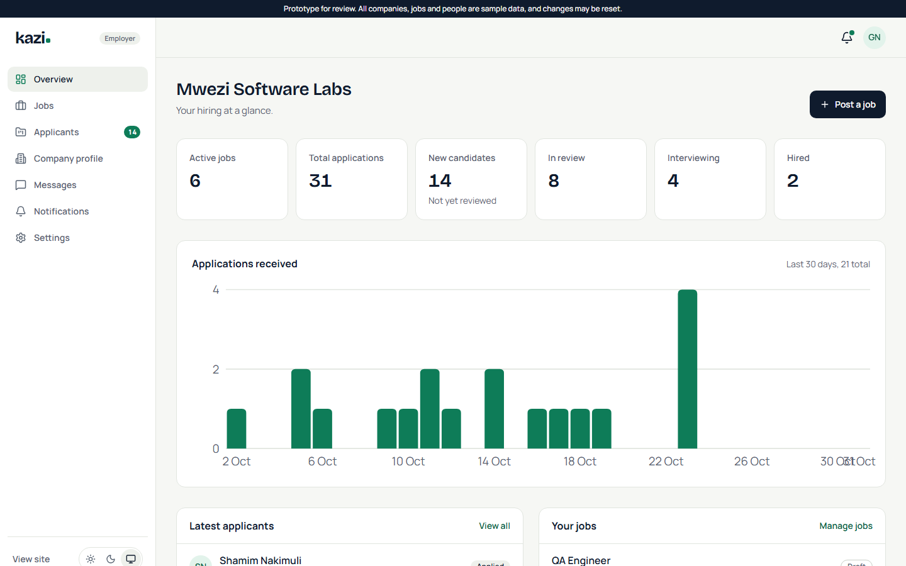

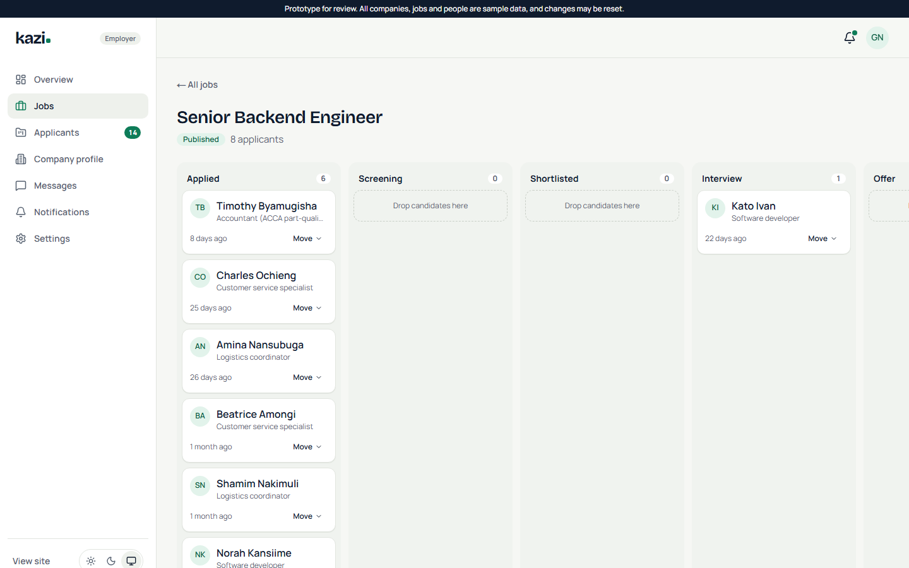
For admins
Platform numbers at a glance, and a moderation queue that scores every job post and holds back scams, like fees charged to applicants or guaranteed visas, before they go live.

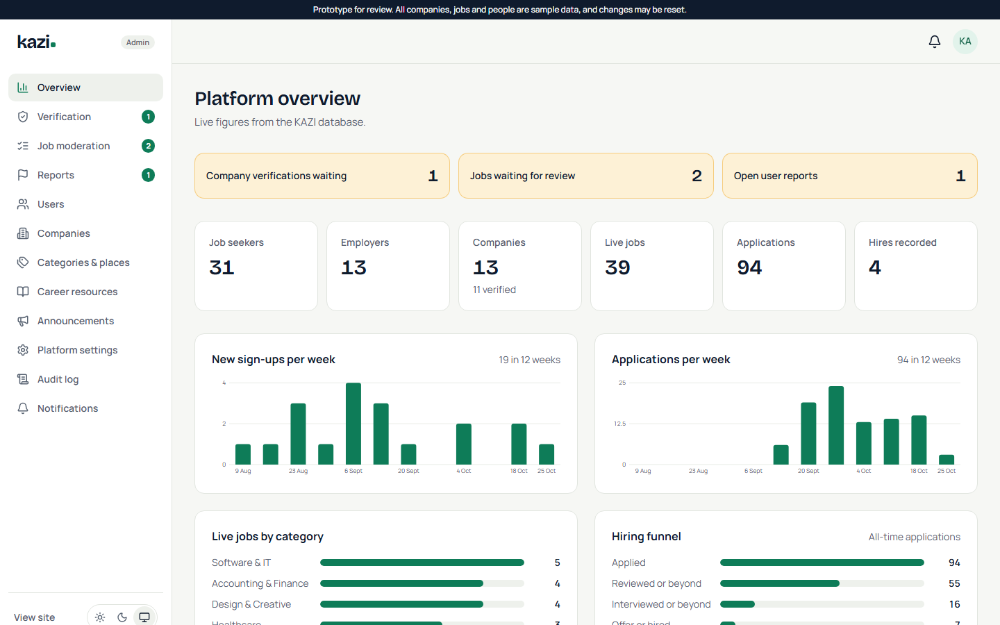

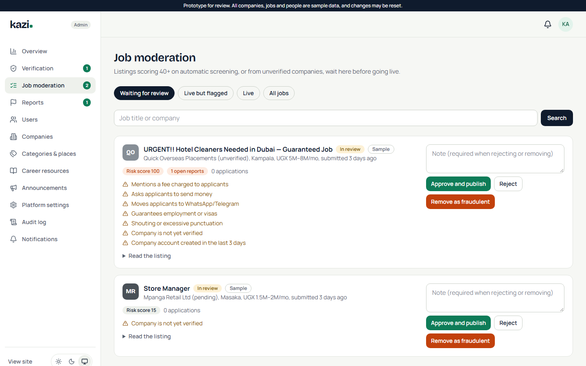